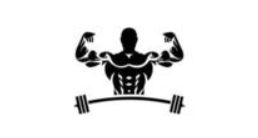

Importância dos Exercícios Físicos
Os exercícios físicos desempenham um papel crucial na manutenção da saúde e no bem-estar geral. Incorporar exercícios à sua rotina pode trazer uma série de benefícios, tanto físicos quanto mentais. Aqui estão algumas razões para praticar atividades físicas regularmente:
- Melhora da Saúde Cardiovascular: Exercícios aeróbicos, como caminhada, corrida ou natação, fortalecem o coração e os pulmões, melhorando a circulação sanguínea e reduzindo o risco de doenças cardíacas.
- Controle de Peso: A atividade física regular ajuda a queimar calorias e a manter o peso corporal adequado, prevenindo a obesidade e doenças associadas, como diabetes tipo 2.
- Fortalecimento Muscular e Ósseo: Exercícios de resistência, como musculação, aumentam a força muscular e a densidade óssea, o que é crucial para prevenir osteoporose e lesões, especialmente com o envelhecimento.
- Melhoria do Humor e Redução do Estresse: A prática de exercícios libera endorfinas, substâncias químicas no cérebro que ajudam a melhorar o humor e a reduzir o estresse e a ansiedade.
- Aumento da Energia: A atividade física regular pode melhorar a resistência e a capacidade de realização das tarefas diárias, promovendo mais energia ao longo do dia.
- Qualidade do Sono: Exercícios ajudam a regular os padrões de sono, contribuindo para um descanso mais profundo e restaurador.
- Melhora da Flexibilidade e Mobilidade: Atividades como yoga ou alongamentos regulares ajudam a manter as articulações flexíveis, melhorando a postura e prevenindo dores.
- Prevenção de Doenças Crônicas: Além de reduzir o risco de doenças cardíacas, o exercício regular ajuda a prevenir condições como hipertensão, colesterol alto, síndrome metabólica e alguns tipos de câncer.

Dicas para Incorporar Exercícios na Rotina
Incorporar exercícios na rotina diária, mesmo que por 30 minutos, pode trazer benefícios significativos à saúde física e mental. Algumas dicas para começar incluem:
- Escolha uma Atividade que Goste: Encontre uma atividade física que você aprecie, seja caminhar, nadar, correr ou praticar esportes.
- Comece Devagar: Se você está começando, aumente gradualmente a intensidade e a duração do exercício para evitar lesões.
- Faça Alongamentos: Antes e depois do exercício, alongue seus músculos para evitar lesões e melhorar a flexibilidade.
- Mantenha uma Rotina: Tente incorporar exercícios em sua rotina diária ou semanal para garantir consistência.
- Hidrate-se: Não se esqueça de beber água antes, durante e após o exercício para manter-se hidratado.
Yoga
O yoga ajuda a entender melhor o corpo, a controlar as emoções e a compreender como o campo da saúde física e da saúde mental estão conectados.
Veja o vídeo

Musculação
A musculação ajuda a perder peso, uma vez que estimula o ganho de massa muscular ao mesmo tempo que permite a perda de gordura.
Veja o vídeo